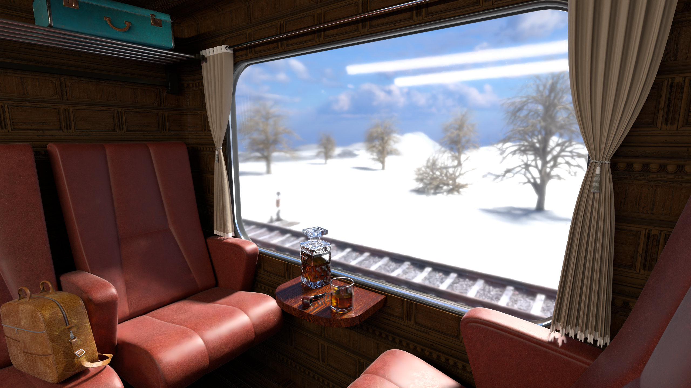

CG1 Rendering Competition:
JOURNEY TO THE UNKNOWN
Download

Lost Tracks:
A Journey in the Unknown Express
The Orient Express? The Transsiberian Railway, the Hogwarts Express or the Polar Express?
We got inspired by these train rides and combined them into this scene. But where is this train heading to? We don't know,
hence it is an actual journey to the unknown. Are we a student travelling to Hogwarts? It doesn't seem to be realistic for Hogwarts students to drink whiskey or smoke pipes on their train ride,
so it might be the train compartment of a person travelling from Paris to Istanbul in the Orient Express (hopefully no one died during this ride). But then again, the train is travelling through a snowy landscape,
which rather suggests the Polar Express or the Transsiberian Railway.
So what makes this scene special? We aimed for high realism and at the same time we didn't
want to directly replicate a scene from the real world. We wanted to create a scene that is not directly from a movie or a book,
but rather a scene that could be from a movie or a book.
Specs
More than twenty prototypes were necessary until we settled with this final scene.
Prototypes and Scene Design
Here, you can see the gradual progress of our scene, from the initial idea to the final scene. We first tested
if a train compartment with the camera facing outside the window is looking good.
After we settled for the basic idea, we added a wooden panel texture to the walls, added
more seats, a table as well as a storage compartment with a turquoise suitcase for some colorful contrast.
Also we changed the grass texture from the outside to a snow texture.
But now the table seemed to be too bright, so we decided for a darker texture. Additionally there are now trees and a second railway in the landscape.
Then we added some details on the table,
we thought a glass of whiskey fitted the somewhat luxurios train ride really well. Here we played around with the roughness of the whiskey bottle and
we concluded that a clear dielectric represented the bottle the best. We also experimented with the texture of the seats and settled for a more leathery look.
After that we added a leather bag and a smoking pipe and since the windows looked a bit empty we added a curtain.
We finalized our scene with more trees and a more enhanced landscape.
Features
We implemented five different features. Why we decided to use these five is explained in the following section.
Rough dielectric
We decided to implement the rough dielectric because it looks very interesting. You can see the basic idea in the two bunny pictures on the right. It also makes beautiful subtle details possible. For example look a bit more closely to the whiskey bottle as well as the ice cubes in the glass. The left pictures feature only regular dielectrics. In the pictures on the right, the bottle is rendered with a roughness of 0.15 and the ice cubes are rendered with a roughness of 0.4. The glass pane is rendered with a roughness of 0.06
Shading Normals
Using normals for shading is a really simple way of adding extra detail to textures without building complicated meshes. So it was clear that we should implement it. As one can see adding a normal map to a brickwall makes it look more realistic with a certain amount of depth to it, although the underlying mesh stays the same.

{kind=link}
{kind=link}
{kind=link}
{kind=link}
{kind=link}
{kind=link}
{kind=link}
{kind=link}
{kind=link}
{kind=link}
{kind=link}
{kind=link}
{kind=link}
Area Light sampling
We wanted to use an area light for the train interior, so we implemented basic area light sampling. An area light produces less noise than a point light inside the train. Furthermore the sunlight in our scene looked better with an area light than with a directional or a point light. It casts smoother shadows on the train seats, which looks more realistic.
{kind=link}
{kind=link}
{kind=link}
{kind=link}
Denoising
Denoising is probably one of the features with the highest impact. Especially with the rough dielectric, which can produce quite some noise in the scene, for example when point lights are involved. Therefore we thought this feature is a must.
{kind=link}
{kind=link}
Tonemapping
Tonemapping can enhance the overall look of a picture with high contrast. However we found that it doesn't fit the look of our scene, so we left it out in the final render.
{kind=link}
About
Julian Tonner and Philipp Ziegler are computer science students at Saarland University.
This project was part of the Computer Graphics 1 course.
Credits
All assets and materials we used are from blenderkit.com